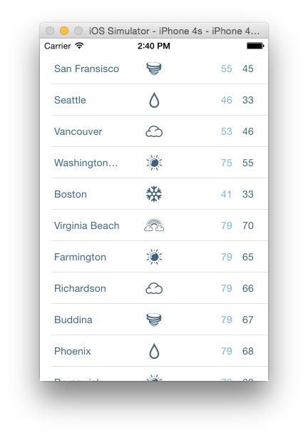

Duration
15 minutes
Goals
The primary goal of this exercise is to create a custom table view cell programmatically.
Required assets
The provided Part 02 Resources folder contains a starter solution as well as a completed solution you can use to check your work. Please make sure you have this folder before you begin.
Challenge
You'll start with an existing application that has a UITableViewController created using the Xamarin designer.
Currently it's using the default cell style to display a single line of text.
You're going to create a custom cell and use it to display the weather data within the table view.
- Inspect the starter solution in the Part 02 Resources folder.
- Create a custom table view cell class.
- Add child views to display an image and three labels.
- Layout the child views to mimic the image shown above.
- Pass the weather data to the custom cell class.
- Display the custom cell.
Steps
Below are the step-by-step instructions to implement the exercise.
Inspect the starter solution
- Open the starter solution in the Part 02 Resources folder and run the application. It works but it's not very visually appealing.
Create a custom table view cell class
Create a new class that derives from UITableViewCell.
- Add a new class to the weather project and name it WeatherCell.cs
- Open the WeatherCell.cs class and change the class definition to inherit from
UITableViewCell. - We need to change the constructor in order to use the new cell with the table view created in the designer.
Change the constructor to accept an
IntPtrnamed ptr and pass it to the base constructor.
Add child views to display an image and three labels
To display the weather data we're going to use a UIImageView
and three UILabels.
- Add the child views to the custom cell.
Specifically, create a
UIImageViewnamed imgWeather and threeUILabels; lblCity, lblHigh, and lblLow. - Instantiate the four child views in the constructor, customize the fonts and colors as you like, and add the views to the
ContentViewof the cell.
Layout the child views
To align the child views, we're going to override the LayoutSubviews method.
- Override the
LayoutSubviewsmethod. - Set the size and position of the four child views from within the method.
Pass the weather data to the custom cell
We'll create a public method that accepts a Weather object and then updates our child views.
- Create a public method called
UpdateDatathat accepts aWeatherobject. - Set the
Textproperties on the threeUILabels. - Set the
Imageproperty of theUIImageView.
Use the custom cell
Update the Table View code-behind to use the custom cell and pass it the weather data.
- Open WeatherTVC.cs
- In order to implement cell re-use for our custom cell, we'll register the cell from within the table view class. In the constuctor of WeatherTVC, register the custom cell using the cell ID.
- Scroll down to the
GetCellmethod. - Update the
GetCellmethod. Because the cell is registered with the table view, you no longer need to manually instantiate the cells. But we will need to cast the returned cell toWeatherCellso we can use theUpdateDatamethod. - Finally, call
UpdateDataon the cell, and pass it the appropriate weather data.
- Run the app!
Summary
Congratulations! You have sucessfully created and utilized a custom table view cell.